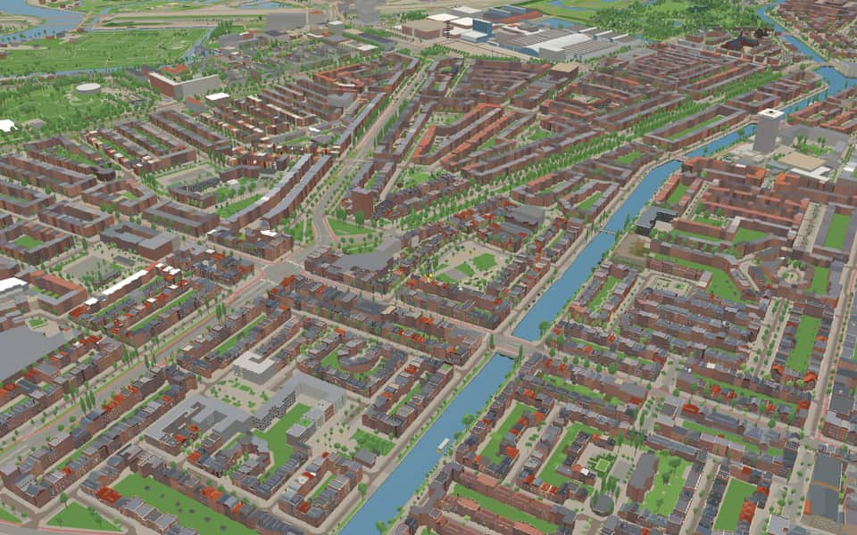
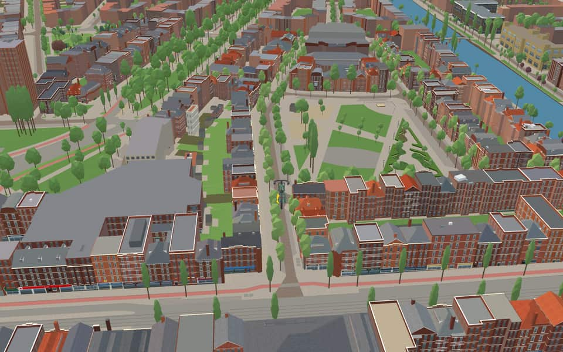

Quarter in Rivierenbuurt
IJselbuurt
One of the 78 neighbourhoods whose postcard you can collect on a ride through Amsterdam.
The name. The name matches IJselstraat, in the area. The river IJssel, a branch of the Rhine, runs from Westervoort to the IJsselmeer. Gemeente Amsterdam street-name register
Ride IJselbuurt1 fact · 19 name stories


In the game
Frames from a ride through IJselbuurt.


6 more photos of IJselbuurt


.jpg){kind=link}


Built here
Buildings modelled one by one for the ride.
Nothing here is individually modelled yet: the ride draws IJselbuurt from the city's 3D building register (3DBAG), with real heights and roofs.
Did you know
Trivia the ride can show you here.
- VrijheidslaanA wide central lawn originally present here vanished after 1950 when trams began stopping on the right. nl.wikipedia.org
Names on the map
Where the canal, bridge and street names come from.
Streets
- AmstelkadeA canal dug around 1920 as part of Berlage's Plan Zuid. It connects the river of the same name with a five-way junction of canals, including the Boerenwetering, the Noorder Amstelkanaal and the Zuider Amstelkanaal.
- BerkelstraatThe small river that flows into the IJssel near Zutphen.
- BorssenburgpleinA former country house on the Amsteldijk, demolished in 1886. Around 1583 it was the country retreat of Jacob Frans Oetgens, who was married to Lysbeth Bors, after whom he named the house.
- BorssenburgstraatA former country house on the Amsteldijk, demolished in 1886. Around 1583 it was the country retreat of Jacob Frans Oetgens, who was married to Lysbeth Bors, after whom he named the house.
- HolendrechtstraatA watercourse on the border of Noord-Holland and Utrecht. The Holendrechterweg runs along this water and used to lie entirely in the municipality of Ouder-Amstel. With the annexation of 1966 part of the road came onto Amsterdam territory.
- IJselstraatThe river IJssel, a branch of the Rhine, runs from Westervoort to the IJsselmeer.
- Korte MeerhuizenstraatA former country house on the Amstel, where the Amstelkade now meets the Amsteldijk, demolished around 1914. In the seventeenth century the poet Hendrik Laurensz Spiegel lived here.
- Kromme-MijdrechtstraatThe river in Zuid-Holland. Where it joins the Drecht, the Amstel begins. That the street is curved is a coincidence, or a joke by whoever named it.
- MeerhuizenpleinA former country house on the Amstel, where the Amstelkade now meets the Amsteldijk, demolished around 1914. In the seventeenth century the poet Hendrik Laurensz Spiegel lived here.
- MeerhuizenstraatA former country house on the Amstel, where the Amstelkade now meets the Amsteldijk, demolished around 1914. In the seventeenth century the poet Hendrik Laurensz Spiegel lived here.
- Oude-IJselstraatThe Oude IJssel is a tributary of the IJssel.
- ReggestraatA tributary of the Overijsselse Vecht.
7 more streets with a story
- RijnstraatThe river (Rhine) that rises in Switzerland and enters the Netherlands at Lobith.
- SchipbeekstraatA shipping canal dug in the fifteenth century and extended in later centuries, on the border of Gelderland and Overijssel, which joins the IJssel at Deventer.
- SlingerbeekstraatA stream in the Gelderland Achterhoek that flows into the Oude IJssel at Doetinchem.
- UithoornstraatThe Noord-Holland town of Uithoorn is named here because the Uithoorn barge skipper moored on the Amsteldijk level with this street.
- VechtstraatThe river that flows into the IJsselmeer at Muiden.
- VrijheidslaanThis avenue, originally called Amstellaan, was renamed Stalinlaan after the Second World War, after the Soviet leader Joseph Stalin, because the Soviet Union had brought about our liberation together with the Allies. After the Russian intervention in the Hungarian uprising of 1956 the name was changed to Vrijheidslaan (freedom avenue).
- WaalstraatA branch of the Rhine from Nijmegen to Gorinchem, after which it joins the Maas and is called the Merwede.